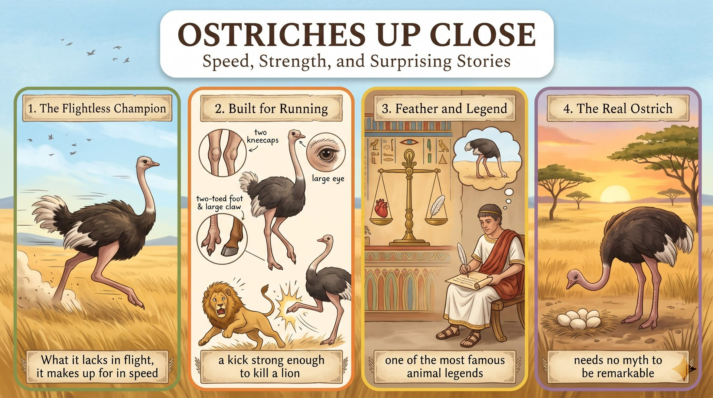

研究人員指出，鴕鳥身高可達 2.7 公尺，雖不會飛，時速卻能達到 70 公里。
what it lacks in flight兩個膝蓋骨帶來速度，兩趾腳適合沙地，直徑五公分的眼睛可遠距離發現危險。
a unique structure古埃及以羽毛象徵真理；老普林尼的記載則留下至今仍流傳的錯誤傳說。
this false legend觀察顯示，鴕鳥低頭只是在進食、喝水或翻蛋，牠獨一無二，也十分適應環境。
not only one of a kind but also well suitedResearchers (S) + describe (V) + a bird (O)。
who 主格關代修飾 Researchers；standing ... 和 weighing ... 是分詞，補充說明這種鳥。
up close 是副詞片語，不寫 up closely。like no other 放名詞後。
Researchers who study ostriches up close（主詞＋關代子句）describe a bird like no other,（主幹）standing up to 2.7 meters tall（分詞片語）and weighing more than 135 kilograms.（並列分詞）語塊 1 ➔ 語塊 2 ➔ 語塊 3 ➔ 語塊 4
先把主詞翻完整，「近距離研究鴕鳥的人員」。
who：往左看是人 Researchers，往右看 study ... 缺主詞，是主格關代。like no other＝unlike any other N.；up to＋數值＝高達。The species (S) + cannot fly (V)；後句是 it makes up for what it lacks in flight in speed 的受詞提前。
but 對等轉折；what 名詞子句是提前的受詞；reaching ... 分詞構句表結果。
in speed 的手段提到動詞前。
make up for 的 for 不能少。species 單複數同形，這裡當單數。
The species cannot fly,（第一子句）but what it lacks in flight,（what 子句（提前受詞））it makes up for in speed,（主幹）reaching 70 kilometers per hour.（分詞構句）語塊 1 ➔ 語塊 2 ➔ 語塊 3 ➔ 語塊 4
這句有對照，順著從「這個物種不會飛」開始。
what：左邊是 but，沒有先行詞；右邊 it lacks 缺受詞，所以是名詞子句。makes up for 後面直接接 in speed，受詞不見了，就是提到前面的 what 子句。reaching：主詞還是 it，主動用 V-ing。
species＝物種；make up for＝compensate for。What A lacks in X, it makes up for in Y.this speed (S) + comes from (V) + a unique structure (O)。
According to scientists 表來源；冒號後具體說明 structure。
according to 句首加逗號；on each leg 介系詞用 on。
According to scientists,（介系詞片語）this speed comes from a unique structure:（主幹）two kneecaps on each leg.（冒號補充）語塊 1 ➔ 語塊 2 ➔ 語塊 3（on each leg 提前）
從來源開始翻：「根據科學家的說法」。
According to 是介系詞，只接名詞 scientists。two kneecaps on each leg 沒有動詞，只是名詞片語，用來具體說明 structure。come from＝來自；result from 也可。Each foot (S) + has (V) + two toes (O)；第二子句 its shape (S) + resembles (V) + a horse's hoof (O)。
one of which 關代指 two toes；and 對等；, which 關代指前面這種形狀。
resemble 不加 to。enable＋O＋to V。
Each foot has two toes,（第一子句）one of which carries a large claw,（of which 關代子句）and its shape resembles a horse's hoof,（第二子句）which enables the bird to run across sand.（非限定關代子句）語塊 1 ➔ 語塊 2 ➔ 語塊 3 ➔ 語塊 4
順著翻，先講腳趾。
one of which：往左看是 two toes，所以「其中一根」。and：右邊 its shape resembles ... 是完整句，對等連接。which：不是 hoof 讓牠跑，是這種形狀，代回去讀就懂。
carry 可表「長有」；resemble＝look like。These legs (S) + have (V) + the strength (O)；to deliver a kick 修飾 strength。
to deliver ... 不定詞修飾名詞；strong enough to ... 後位修飾 kick。
strong enough to kill a lion 戴到「一擊」前。
the strength to V＝足以……的力氣；語序 strong enough，不寫 enough strong。
These legs have the strength（主幹）to deliver a kick（不定詞片語）strong enough to kill a lion.（後位修飾）語塊 1 ➔ 語塊 3 提前 ➔ 語塊 2
主詞順翻，「這雙腿的力量足以」。
to deliver：往左看是 strength，說明力量用來做什麼。to kill：往左看是 strong enough，說明強到什麼程度。
strength 是 strong 的名詞；deliver a speech／a kick。Each eye (S) + measures (V)；第二子句 this sharp eyesight (S) + helps (V) + the bird (O) + spot danger。
and 對等連接；help＋O＋V 省略 to。
from far away 提到「發現」前。
數字＋單位＋across；eyesight 不可數。
Each eye measures about five centimeters across,（第一子句）and this sharp eyesight helps the bird（第二子句）spot danger（原形動詞）from far away.（地點片語）語塊 1 ➔ 語塊 2 ➔ 語塊 4 提前 ➔ 語塊 3
先翻數據：「每隻眼睛直徑約五公分」。
and：左右都有主詞和動詞，對等連接。helps the bird spot：help 後面可以直接接原形，不一定要 to。
spot＝notice；eyesight＝vision。such vision (S) + leaves (V) + the ostrich (O) + perfectly adapted (C)。
Together with 是片語介系詞，不影響主詞單複數。
adapted to＋N.；leave＋O＋Adj.＝使……處於某狀態。
Together with its strong legs,（片語介系詞）such vision（主詞）leaves the ostrich perfectly adapted（動詞＋受詞＋補語）to the open plains.（介系詞片語）語塊 2 提前 ➔ 語塊 1 ➔ 語塊 3 ➔ 語塊 4
先翻主詞「這樣的視力」，再補「加上強壯的雙腿」。
leaves the ostrich perfectly adapted：受詞後面接形容詞，這時 leave＝使處於某狀態。together with 那段不算主詞。
leave＋O＋Adj.；adapted to＝suited to。Historical records (S) + show (V) + that ... (O)；that 子句內有兩個並列子句。
that 名詞子句；and 並列；to decide 表目的；who 引導間接問句。
in ancient Egypt 順翻；to decide 目的放後面順翻。
stand for＝象徵。weigh A against B。afterlife 前加 the。
Historical records show that in ancient Egypt,（主句＋時地）a single feather stood for truth and justice,（子句一）and a dead person's heart was weighed against it（子句二）to decide who could enter the afterlife.（不定詞（目的））語塊 1 ➔ 語塊 2 ➔ 語塊 3 ➔ 語塊 4
這句很長，但語序和中文接近，順著翻就好。
that：左邊動詞 show，右邊完整句，是名詞子句。and：右邊 a dead person's heart was weighed 也完整，並列在 that 之下。who：往左是動詞 decide，不是名詞，所以 who 引導間接問句，不是關代。
stand for＝be a symbol of；the afterlife＝來世。Records show that ...，避免主觀語氣。The feather (S) + was selected (V)；because 子句表原因。
because 原因副詞子句。
select 是 choose 的正式同義字；symmetrical 形容詞。
The feather was selected（主幹（被動））because it was symmetrical.（原因子句）語塊 1 ➔ 語塊 2
短句，一口氣翻完。
it was symmetrical 有主詞動詞，所以用 because。如果只接名詞，例如 its shape，才用 because of。
select＝choose；symmetrical＝對稱的。Later writers (S) + misunderstood (V)；冒號後 Pliny the Elder (S) + claimed (V)；再接 this false legend (S) + captures (V)。
still captures 用現在式，表示影響延續到今天。
that 名詞子句；when 時間子句；and 對等。
In 77 CE 順翻；when 子句提到動作前。
misunderstand 不規則變化；capture sb's imagination 固定搭配。
Later writers misunderstood the bird:（主幹）In 77 CE, Pliny the Elder claimed（冒號後主句）that ostriches bury their heads（that 子句）when they are scared,（時間子句）and this false legend still captures people's imagination.（對等子句）語塊 1 ➔ 語塊 2 ➔ 語塊 3 主詞 ➔ 語塊 4 提前 ➔ 語塊 3 動作 ➔ 語塊 5
先把結論翻出來：「後來的作家誤解了這種鳥」，冒號後舉例。
that：左邊是動詞 claimed，右邊完整，是名詞子句。when：掛在 bury 上，表示時間。and this false legend ...：回到主線，this 指的是前面整個說法。
claim that＝宣稱；false＝錯誤的。claim 和事實保持距離。Field observations (S) + show (V) + that ... (O)。
that 名詞子句；or 並列；going about ... 分詞補充。
simply 譯「只是」。
go about one's daily life。
Field observations show（主句）that the birds are actually eating, drinking, or turning their eggs,（that 子句）simply going about their daily lives.（分詞片語）語塊 1 ➔ 語塊 2 ➔ 語塊 3
從主句順翻：「實地觀察顯示」。
that：動詞 show 後接完整句，名詞子句。eating, drinking, or turning：三個 V-ing 都接在 are 後面。going about：逗號後的分詞片語，補充說明這些動作的本質。
field observation＝實地觀察；go about＝照常進行。The evidence (S) + indicates (V) + that ... (O)；分號後 it (S) + needs (V) + no myth (O)。
that 名詞子句；not only A but also B；分號連接獨立句。
to be remarkable 轉成「也足以令人讚嘆」。
The evidence indicates（主句）that the ostrich is not only one of a kind（that 子句前半）but also incredibly well suited to its environment;（that 子句後半）it needs no myth to be remarkable.（分號後獨立句）語塊 1 ➔ 語塊 2 ➔ 語塊 3 ➔ 語塊 4
這是結論，從「證據顯示」順著翻。
not only ... but also：一左一右都是形容詞片語，對齊。indicate that＝show that；suited to＝adapted to。The evidence indicates that ... 收尾，最符合報導體。1. 請選出最適合填入 (1) 的字：
what S lack in A, S make up for in B。what 子句是 make up for 的提前受詞。2. 請選出最適合填入 (2) 的字：
both of which＝兩者都。much 接不可數，後兩者不能接 of which。3. 請選出最適合填入 (3) 的字：
enable＋O＋to V。後面有 it to walk，只有 enable 合句型。4. 請選出最適合填入 (4) 的字：
According to。Thanks／Due／Owing to 都表原因，不接研究來源。5. 請選出最適合填入 (5) 的字：
not only A but also B。6. The new telescope is a ________ tool; no other device can see planets this far away.
unique（獨一無二的）。7. The company's new organizational ________ gives each team more freedom.
organizational structure。8. Regular exercise builds both muscle and ________, so older people can stay active.
strength。9. Without glasses, his ________ is so poor that he cannot read road signs.
eyesight。10. 下列哪一句文法正確？
of which；of them 無法連接句子；whom 指人。11. 下列哪一句文法正確？
together with 不影響主詞，動詞配 Mia，用 goes。12. 「這座橋的形狀很像一道彩虹。」最佳英譯是：
resemble 是及物動詞，不加 to、like，也不用被動。13. According to the report, what does a dead person's heart get compared with in Egyptian myth?
14. What does the report say about the legend of ostriches burying their heads?
15. Which statement best summarizes the report?